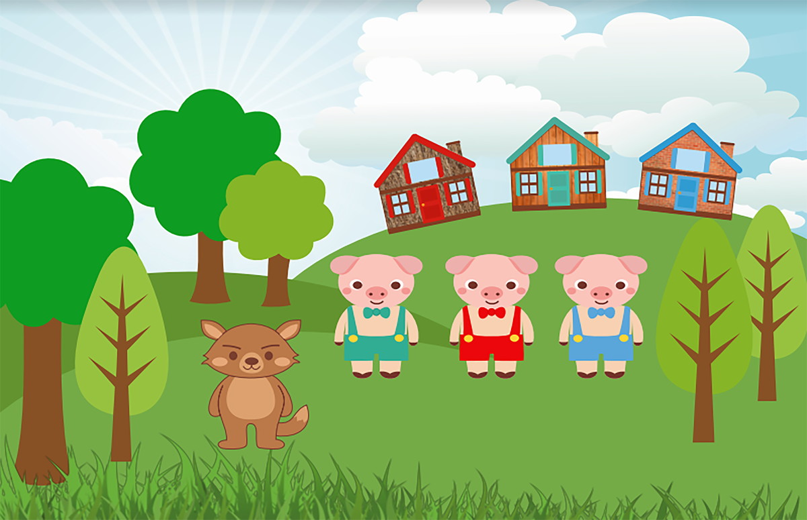

Os três Porquinhos

Era uma vez três irmãos porquinhos que viviam com a mãe, muito felizes.
Dois porquinhos eram preguiçosos e não ajudavam nada em casa, enquanto o
terceiro porquinho era trabalhador. Um belo dia, a mãe, achando que os
filhos já tinham maturidade, chamou-os e disse:
– Meus meninos, chegou a altura de saírem de casa pois já são grandes o
suficiente para viverem sozinhos. Tenham juízo e muito cuidado com o
Lobo Mau.
Dito isto, a mãe deu um farnel a cada um dos três porquinhos, assim como
algumas economias para que comprassem material para construírem as suas
casas. E lá partiram os três porquinhos.
O primeiro porquinho, que era preguiçoso,decidiu construir uma casa que
não desse trabalho nenhum. Apesar dos irmãos o avisarem que não era
seguro, construiu uma casa de palha num só dia! Após terminar a sua casa
de palha, foi tocar flauta e dançar.
O segundo porquinho, que era menos preguiçoso que o primeiro, resolveu
construir a sua casa em madeira. Apesar de ser mais segura do que a casa
de palha, uma casa de madeira não era, contudo, resistente o suficiente
para impedir a entrada do Lobo Mau, advertiu o terceiro porquinho. No
entanto, o nosso porquinho ignorou o conselho do irmão. E assim, em
apenas depois dias construiu a sua casa de madeira! Dito isto, pegou no
violino e foi tocar e dançar juntamente com o primeiro irmão.
Por sua vez, o terceiro porquinho, que como vimos era trabalhador e
precavido, decidiu construir a sua casa com tijolos.
– Os tijolos são um material muito resistente. Assim, o Lobo Mau não
conseguirá destruir a minha casa – disse para si.
Dito isto, pôs-se, pacientemente, a trabalhar. A construção foi dura e
avançou lentamente. Enquanto isso, os seus dois irmãos tocavam e
dançavam. Finalmente, após algumas semanas terminou a construção de uma
sólida casa em tijolos.
Passado algum tempo, surgiu na floresta o Lobo Mau. Percebendo a
presença dos porquinhos, pensou para si mesmo:
– Mas que bela refeição tenho à minha espera: três porquinhos bem
gordinhos!
Dito isto, foi bater à casa de palha, que era a do primeiro porquinho.
Vendo que era o Lobo Mau, o porquinho respondeu:
– Vai-te embora porque não te irei abrir a porta, Lobo Mau!
O Lobo Mau respondeu:
– Então vou soprar e soprar até levar esta casa pelo ar!
Dito isto, o lobo pôs-se a soprar e a casa de palha foi toda pelo ar. O
primeiro porquinho, em pânico, conseguiu refugiar-se na casa de madeira
que pertencia ao segundo irmão. O Lobo Mau dirigiu-se então para a casa
de madeira, bateu à porta e pediu para entrar. Disseram então os dois
porquinhos:
– Vai-te embora pois nunca te iremos abrir a porta, ó Lobo Mau!
O Lobo Mau respondeu:
– Então vou soprar e soprar até levar esta casa pelo ar!
E mais uma vez, o lobo pôs-se a soprar e a soprar e a casa de madeira
acabou por ir toda pelo ar. O primeiro e o segundo porquinho, em pânico,
fugiram e refugiaram-se na casa de tijolos que pertencia ao terceiro
irmão. Os três porquinhos ficam são e salvos na casa de tijolos. Então,
o Lobo Mau dirigiu-se para a casa de tijolos, e tal como das outras
vezes, bateu à porta e pediu para entrar. Responderam então os três
porquinhos:
– Vai-te embora já que não te vamos abrir a porta, Lobo Mau! O Lobo Mau
riu-se e respondeu:
– Então vou soprar e soprar até levar esta casa pelo ar!
E dito isto, confiante, começou a soprar e a soprar, e a soprar…a
soprar…até que ficou sem ar. A casa, aquela, não se tinha mexido nem
sequer um polegar! O Lobo Mau subiu, então, ao telhado e tentou entrar
na casa pela chaminé. No entanto, como o terceiro porquinho era muito
precavido, tinha deixado um caldeirão de água a ferver debaixo da
chaminé. Mal desceu pela chaminé abaixo, o lobo caiu no caldeirão e
apanhou um enorme escaldão. Depois fugiu e nunca, mas nunca mais voltou.
Os três porquinhos ficaram a viver na casa de tijolos em segurança e muito felizes.